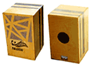
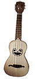
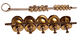
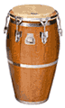
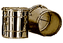
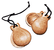
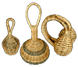
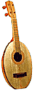
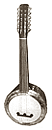

Сajón: Деревянный перкуссийный бокс, широко использовавшийся в ранних интерпретациях rumba, flamenco и до сих пор остающийся популярным в латинской музыке. Часто бывает искусно украшен.
Chimta:
Звук довольно громкий и характерный.
Изначально изготавливался из дерева, в наши дни часто используется фиберглас.
Cuica: Бразильский фрикционный барабан.

Cavaquinho: Популярный в мире Лузитании (историческое название части современной Португалии) и на Кабо Верде 4x струнный инструмент. Название дословно переводится как «небольшой кусок дерева». Без характерного звука cavaquinho невозможно представить звучание двух основных стилей музыки Кабо Верде - morna и coladeira.Chimta:

Индийский перкуссийный инструмент. Состоит из узкой полоски согнутой вокруг кольца стали с закрепленными попарно маленькими тарелочками, расположенными группами по шесть-десять.Звук довольно громкий и характерный.

Conga (Tumbadora): Одноголовый бочкообразный барабан c натянутой кожей, уходящий истоками к барабанам Африки. Почти обязательный инструмент латинских групп и наиболее часто используемый (не считая ударной установки) барабан в джазе, рок и поп-музыке.Изначально изготавливался из дерева, в наши дни часто используется фиберглас.
Cuica: Бразильский фрикционный барабан.

Палочка фиксируется в центре барабана и проходит внутри оболочки. Звук извлекают трением палочки между большим и указательным пальцами с сырой губкой или куском кожи. Под воздействием трения кожа барабана начинает вибрировать. Cuica играет важную роль в традиционной бразильской танцевальной музыке.
Сastanets: Пара небольших шейкеров из Гвинеи, близких maracas. Они сделаны из gourd, наполненного мелкой галькой. Обычно соединены палочкой, иногда украшены цепочками.
Впервые на записях caxixi появились у Airto Moreira.
Claves: Пара полированных палок из твердого дерева, которыми ударяют друг о друга, производя высокий звук; слово также имеет отношение к двухтактным ритмическим узорам, лежащим в основе афро-кубинской музыки. Помимо Кубы claves использовались в ранней конголезской музыке.
У cumbus безладовый гриф (гораздо длиннее, чем у уда) и корпус с животной кожей, растянутой над устьем металлической чаши. Форма корпуса позаимствована у гораздо более древнего инструмента - Yayli Tambur (чашеобразный tambur).

Caxixi: Оплетенные травой или лозой погремушки, широко распространенные в Бразилии. Также встречаются в некоторых частях Африки, но другой формы и большего размера. В бразильской музыке caxixi тесно связаны с игрой на berimbau.Впервые на записях caxixi появились у Airto Moreira.
Claves: Пара полированных палок из твердого дерева, которыми ударяют друг о друга, производя высокий звук; слово также имеет отношение к двухтактным ритмическим узорам, лежащим в основе афро-кубинской музыки. Помимо Кубы claves использовались в ранней конголезской музыке.

Cuatro: Небольшая гитара, очень популярная в сельской музыке Пуэрто-Рико. В северной части Южной Америки, особенно в Колумбии и Венесуэле, существует большое количество инструментов близких гитаре, с названиями идущими от количества струн. Cuatro - это 10-струнный (четыре сдвоенных или утроенных струны) инструмент; по некоторым источникам, встречаются 10-струнные cuatro без сдвоенных струн. Другие примеры - cinco (5 струн), seis (6), cuatro y medio (4 с одной басовой), cinco y medio (5 с басовой).
Cumbus (произносится joom-bush): Инструмент был создан Zeynel Abidin Cumbus в начале XX столетия и свое название приобрел в честь автора. За короткое время он приобрел огромную популярность, затмив традиционный oud.У cumbus безладовый гриф (гораздо длиннее, чем у уда) и корпус с животной кожей, растянутой над устьем металлической чаши. Форма корпуса позаимствована у гораздо более древнего инструмента - Yayli Tambur (чашеобразный tambur).